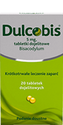
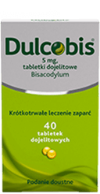

Zastosowany wieczorem
Przynosi ulgę w zaparciach
o poranku1
Dzień dobry bez zaparcia będzie jeszcze lepszy
Poranek jest kluczem do udanego dnia - to, jak go zaczniesz, ma wpływ na jego resztę. Przy zaparciach już od rana rośnie frustracja i spada pewność siebie.2

Dulcobis – ekspert w leczeniu zaparć3
Dulcobis przynosi ulgę w zaparciach już po 6h.4
Działa w harmonii z Twoim ciałem
Poranna ulga jest zsynchronizowana z zegarem biologicznym.12

Prosta riposta na zaparcia6
Zaparcia są jedną z najczęstszych dolegliwości dotyczących przewodu pokarmowego.7
Czy wiesz, że zaparcia dotykają nawet do 31% dorosłych?11

Do najczęstszych przyczyn zaparć zaliczamy7,13:
-
 złe nawyki żywieniowe,
złe nawyki żywieniowe,
-
stresujący tryb życia,
-
siedzący tryb życia,
-
starzenie się organizmu,
-
czy podróże.
Zaparcia mogą również towarzyszyć chorobom przewklekłym, nawet tym niezwiązanym z układem pokarmowym. Zaparciom często towarzyszą objawy takie jak: bóle brzucha, wzdęcia, brak apetytu, uczucie pełności i zblokowania.7,13

Szybkość działania
Szybsza ulga w zaparciach8 - Dulcobis przynosi ulgę w zaparciach już po 6h.4

Potrójne działanie
Dulcobis z potrójnym działaniem. Stymuluje, zmiękcza, przyspiesza. Zastosowany wieczorem przynosi ulgę w zaparciach o poranku.5
Łatwość podania
Mała, łatwa w połknięciu tabletka dojelitowa.14 Dzięki specjalnej otoczce rozpuszcza się dopiero w jelicie grubym, czyli pożądanym miejscu działania.6

Wskazania
Krótkotrwałe, objawowe leczenie zaparć. W leczeniu przed i pooperacyjnym. W stanach wymagających ulatwienia defekacji.6
dawkowanie
Dorośli oraz młodzież
i dzieci powyżej 10 lat
1-2 tabletki (5-10 mg) doustnie,
raz na dobę, przed snem.
Dzieci 4-10 lat
1 tabletka dojelitowa (5 mg)
doustnie, raz na dobę, przed snem.*
*Dzieci w wieku 10 lat i młodsze z przewlekłymi lub uporczywymi zaparciami powinny być leczone wyłącznie pod opieką lekarza.
skład
Dulcobis, 5 mg,
tabletki dojelitowe.
Jedna tabletka dojelitowa
zawiera 5 mg bisakodylu (Bisacodylum).
Substancje pomocnicze:
laktoza 33,2 mg,
sacharoza 23,4 mg.6
Na dzień dobry
wszystko wychodzi lepiej - sprawdź!
Rodzina produktów Dulco
|  |  |
duże opakowanie 
|

|
|
|---|---|---|---|---|
| Dulcobis | Dulcobis | Dulcobis | Dulcobis | |
| Typ Produktu | Tabletki Lek bez recepty |
Tabletki Lek bez recepty |
Tabletki Lek bez recepty |
Czopki Lek bez recepty |
| Właściwości | Przynosi ulgę w zaparciach ju po 6h4 | Szybka ulga w zaparciach ju po 10 minutach9 | ||
| Składnik | Bisakodyl | Bisakodyl | Bisakodyl | Bisakodyl |
| Opakowanie | 20 tabletek | 40 tabletek | 60 tabletek | 6 czopków |

Jak pozbyć się
niechcianego kaszlu?
Kaszel to jedna z najczęstszych dolegliwości, z jaką pacjenci zgłaszają się do lekarza POZ. Jego przyczyną są najczęściej wirusowe zakażenia górnych dróg oddechowych, które wymagają jedynie leczenia objawowego.2 Jak jednak rozpoznać czy męczy nas kaszel suchy czy mokry? I jakie leczenie zastosować w przypadku konkretnego rodzaju kaszlu? Dowiedz się więcej!2